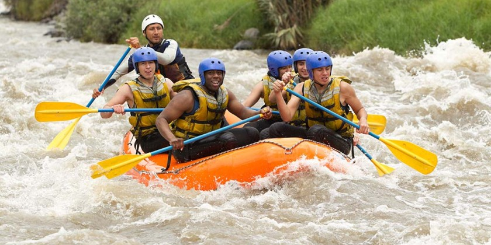

Growing up, my father would often take me and my brothers on nature trips as a bonding experience. I look back on these times as the period of time where I got to truly learn strength, grow as a person. I started this company because I saw an opportunity to provide these experiences with others. As a company, we are committed to providing only the highest quality of service for families or groups looking to get the most out of their time.

Whispering Waves
History
Ultimate Rafting Company started in 1997, as a startup between two cousins. Today,
the company has
over 50 employees and has served
thousands of adventurers.
Over the years we have used our profits to expand our services and improve our
expereiences based on
customer feedback.

We also believe in enriching the community in which we reside. Ultimate Rafting Company is a proud suppoter of many local charities and organizations dedicated to uplifing surrounding communities. We believe that everyone has a part to make the world a better place. To this end, we are constantly searching for charitable organizations eager to help.
Adventure Awaits You!